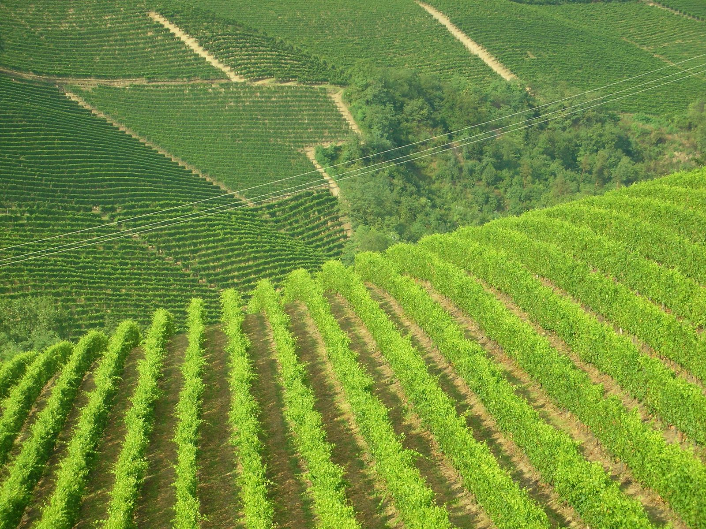

Giorno 2 di 7 · Domenica 9 agosto · Langhe
Pranzo e degustazione in Langa con la famiglia
📌 In sintesi
- Partenza verso le 11:00, prima tappa a Neive.
- Pranzo alle 13:00 in una cantina di Langa, organizzato da tua sorella: il nome lo sa lei.
- Degustazione guidata alle 16:30; se il giro lo permette, si passa anche da La Morra ed eventualmente Barolo.
🕘 Itinerario della giornata
- 09:30Mattina libera. Nessun programma fisso fino alla partenza delle 11:00: dopo il trasferimento serale di ieri, ha senso partire con calma.
- 11:00Partenza verso Neive, in auto con tua sorella e il suo ragazzo.
- 11:30Neive — uno dei borghi di Langa meno battuti dal turismo, tappa di passaggio verso il pranzo: un giro breve del centro, con vista sui vigneti tutt'intorno.
- 13:00Pranzo in cantina, già prenotato da tua sorella — il nome esatto lo sa lei. Aspettatevi un pranzo lungo, a più portate, con i piatti tipici di Langa (tajarin, brasato al Barolo) abbinati ai vini della casa.
- 15:00Tempo fra i vigneti, prima della degustazione: per far scendere il pranzo prima di rimettersi a tavola.
- 16:30Degustazione guidata. Che sia Barolo, Barbaresco o Dolcetto dipende dalla cantina: si assaggia con calma, senza fretta di rimettersi in macchina.
- 18:00La Morra, ed eventualmente il castello di Barolo — probabilmente non lontano dal posto della degustazione: il belvedere sulla conca del Barolo, e se le gambe e il tempo lo permettono dopo una giornata così, un ultimo giro all'Enoteca Regionale dentro il Castello Falletti.
- 19:30Rientro ad Alba/Langa. Dopo una giornata così, la sera probabilmente si salta la cena o ci si limita a qualcosa di leggerissimo.
🗺️ La mappa del giro
Mappa indicativa: la cantina del pranzo e della degustazione la gestisce tua sorella, e La Morra/Barolo sono facoltativi.
🍷 Dove mangiare

- Pranzo, 13:00Cantina di Langa, organizzato da tua sorella. Aspettatevi tajarin al sugo d'arrosto, brasato al Barolo, e i vini della casa in abbinamento.
- CenaCon ogni probabilità non serve: un pranzo di Langa fatto bene copre anche la sera. Se proprio serve qualcosa, tenetelo leggero.
💡 Note e dritte
Il centro della giornata sono pranzo e degustazione, il resto è di contorno. Neive all'andata e La Morra/Barolo dopo la degustazione riempiono il tempo intorno, ma non sono il motivo per cui siete qui: se qualcosa va tagliato, si taglia da lì.
Pranzo e degustazione sono due momenti separati, non uno di seguito all'altro. Il pranzo comincia all'una, la degustazione è alle 16:30, dopo che il pranzo è sceso e si è girato un po' fra i vigneti. Non aspettatevi di sedervi a degustare subito dopo il caffè.
I pranzi di Langa durano. Fra antipasti, primi e secondo, contate facilmente due o tre ore a tavola. È il motivo per cui fra pranzo e degustazione c'è tutto quel margine: serve, non è tempo vuoto da riempire.
La Morra e Barolo sono un "probabilmente", non un piano fisso. Tua sorella dice che il posto della degustazione non è lontano da La Morra: ci si passa se il giro lo permette, sul modello della stessa zona vista con più calma nei giorni scorsi — non è una tappa da incastrare a tutti i costi.
Se oggi non gira. Si taglia La Morra/Barolo, non pranzo o degustazione Sono facoltativi per definizione: pranzo alle 13:00 e degustazione alle 16:30 restano il punto fermo della giornata.